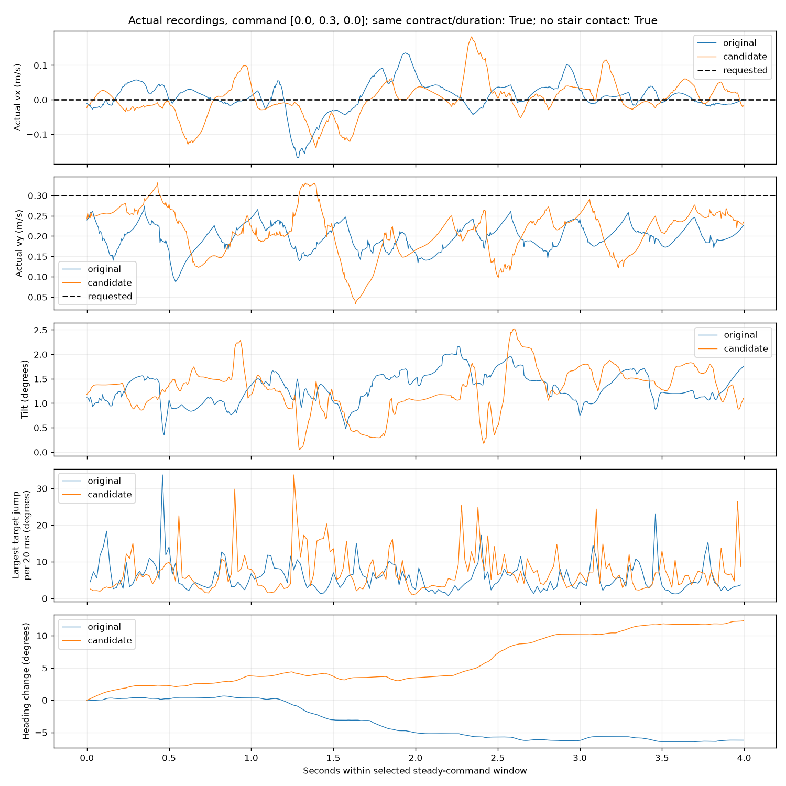

Command: [0.0, 0.3, 0.0]. Same recorded contract and full duration: True. No stair contact before/during either window: True.
Configuration differences: []. Too-short windows remain in the results and are not treated as an equal-duration comparison.
Manual keyboard ramp/start timing can differ despite equal steady requests. Retain failures; no significance or general success-rate claim from one pair. Compare jitter together with tracking, heading, falls/support, not only smoothness.
Good improvement means lower rapid joint motion and target jumps while tracking remains good and the robot stays upright. A stationary robot can have excellent smoothness but fail the task. Target second difference is a discrete acceleration-like quantity, not position jerk.
| label | original | candidate |
|---|---|---|
| update | 90000 | 91000 |
| duration_s | 4.0 | 4.0 |
| mean_body_vx_m_s | 0.009295168433100192 | 0.0017048058147328305 |
| mean_body_vy_m_s | 0.19694139107828032 | 0.21025634067877574 |
| vx_rmse_m_s | 0.04615749662517326 | 0.05249569650219007 |
| vy_rmse_m_s | 0.1079458054088066 | 0.1066894319196819 |
| joint_8_30_hz_rms_deg | 0.27680475712166047 | 0.38006816099614116 |
| max_target_step_deg | 33.682254791259766 | 33.69754409790039 |
| p99_max_joint_target_step_deg | 18.426597595214844 | 26.464046478271484 |
| normalized_target_second_difference_cost | 0.7959007995638284 | 1.3800496855615285 |
| heading_change_deg | -6.206138060262311 | 12.301560719155795 |
| max_tilt_deg | 2.160607765192198 | 2.5207516964962013 |
| any_joint_torque_clipped_fraction | 0.00125 | 0.0 |
